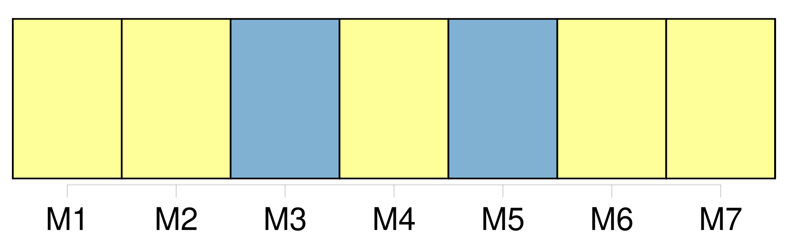
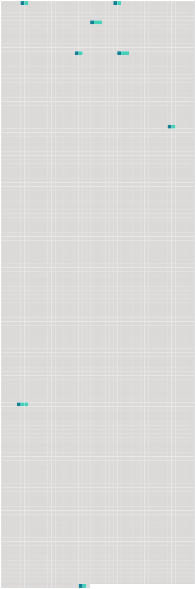

Longueur nb maillons : 8 mentions |
 |
Lorsqu'on voulait pénétrer dans [l'habitation] , on rencontrait un énorme escalier à rampe de bois taillée en balustre. Cet escalier n'avait que deux paliers, [le logis] ne renfermant pas plus de deux étages. [5 phrases] Une porte verte, dont la serge avait jauni et n'était plus retenue que par quelques clous dédorés, donnait passage dans une pièce qui avait pu servir de salle à manger aux temps fabuleux où l'on mangeait dans [ce logis désert] [7 phrases] Tels qu'ils étaient, ces fantômes peints étaient des hôtes bien appropriés à la solitude désolée [du logis]
Des habitants réels eussent paru trop vivants pour [cette maison morte] [23 phrases]
De grands rideaux, fripés dans leurs cassures et qui se seraient déchirés si on eût voulu les faire glisser sur leurs tringles dévorées de rouille, diminuaient encore cette lumière de crépuscule et ajoutaient à la mélancolie [du lieu] [79 phrases]
D'une famille jadis puissante et riche il ne restait qu'un rejeton isolé, errant comme une ombre dans ce manoir peuplé par ses aïeux ; d'une livrée nombreuse il n'existait plus qu'un seul domestique, serviteur par dévouement, qui ne pouvait être remplacé ; d'une meute de trente chiens courants il ne survivait qu'un chien unique, presque aveugle et tout gris de vieillesse, et un chat noir servait d'âme [au logis désert] [66 phrases] Les bœufs dételés allèrent prendre place à l'écurie à côté du bidet blanc ; les comédiennes sautèrent à bas de la charrette, faisant bouffer leurs jupes fripées, et montèrent, guidées par Sigognac, dans la salle à manger, la pièce la plus habitable de [la maison] |
 |
Il est possible de télécharger la ressource sur la page Ortolang |
Si vous avez des questions ou vous voyez des erreurs, merci d'envoyer un mail à silvia.federzoni89@gmail.com |